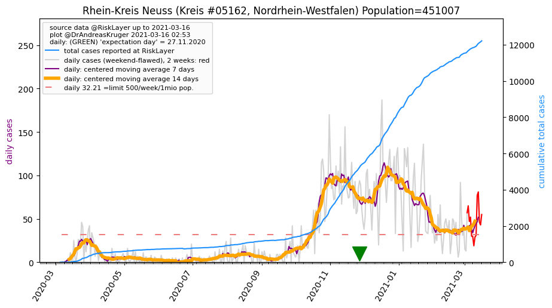
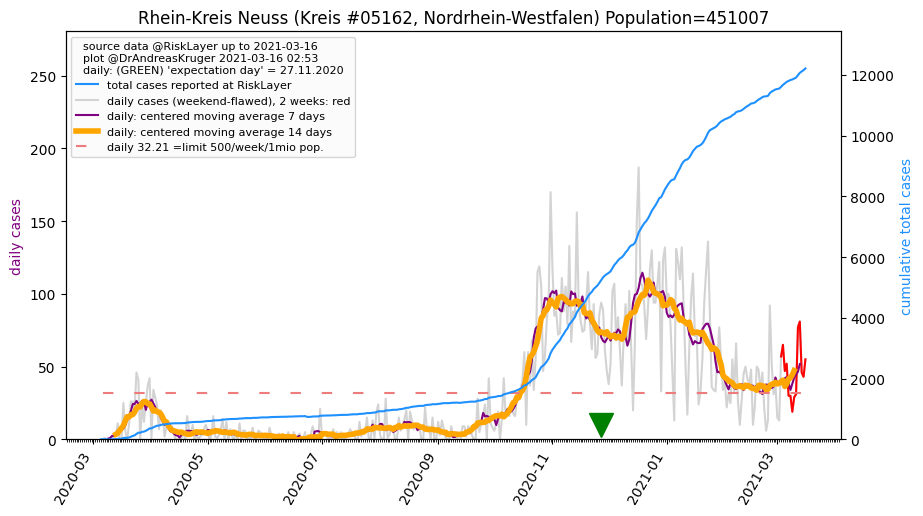

")
")
")
")

")
")
")
")
| Heinsberg_KR (0.0 km) |
Mönchengladbach_KS (21.8 km) |
Viersen_KR (28.3 km) |
| Düren_KR (32.5 km) |
Rhein-Kreis Neuss_KR (35.6 km)  |
Städteregion Aachen_KR (36.0 km) |
| Rhein-Erft-Kreis_KR (42.0 km) |
Krefeld_KS (43.9 km) |
Düsseldorf_KS (49.7 km) |
All plots are regenerated with new data every night. Beware this temporary hotspot is an experimental page - it might get removed, so please do not link to it. Instead link to project http://tiny.cc/cov19de.